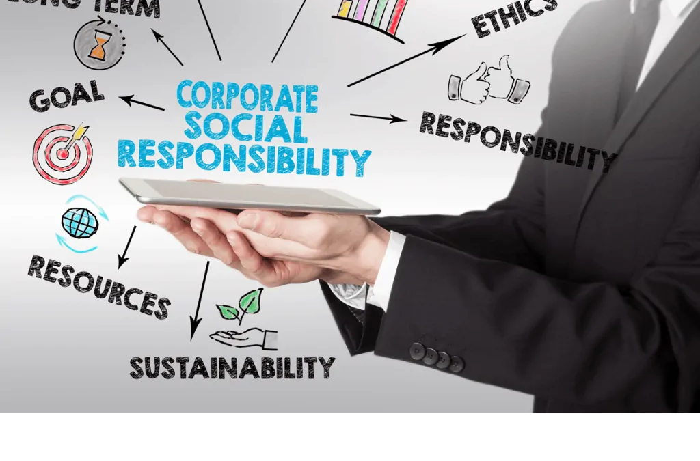

Une analyse de certains sujets tombés ces dernières années.
Prédire des sujets à venir en imaginant à l'avance comment traiter votre futur sujet.
Sous des formulations différentes (la RSE est-elle toujours positive ? attend-on un retour sur l'investissement social ? le verdissement, l'IA et l'ESG, les bénéfices du vert), revient toujours le même débat.
- 2022Should Corporate Social Responsibility always be regarded positively?
- 2024Should companies expect a return on their social investment?
- 2025To what extent is the “greening” of economic activities a challenging process in a globalized context?
- 2025To what extent is AI compatible with environmental and social governance?
- 2025What benefits may companies get from going green?
Genuine, profitable or compulsory? The recurring debate on corporate responsibility
Governance and CSR is the theme that has grown the fastest in recent years, and all its questions revolve around the same debate. Whether the text praises or attacks corporate social responsibility, asks about the return on social investment, or explores the challenge of going green, the examiner is always testing one issue: is corporate responsibility genuine, is it worthwhile, and should it be voluntary or compulsory? Seeing this single debate behind five different questions gives the candidate a powerful base for any variant.
The first recurring angle is sincerity. The 2022 question, based on a text arguing that CSR is largely empty talk, captures a suspicion that returns every year: are companies truly responsible, or are they simply protecting their image? This is the problem of greenwashing, where firms make vague claims such as carbon neutral or eco-friendly without evidence. The key knowledge is the difference between communication and action, the role of stakeholders who demand proof, and the growing risk of complaints or fines for misleading green marketing. A reusable position is that responsibility must be measurable and verifiable, or it is worthless.
The second recurring angle is the business case, or the question of money. The 2024 question about the return on social investment and the 2025 question about the benefits of going green both ask whether responsibility pays. Here the candidate should weigh two views. Critics argue that companies exist to make profit and that some social initiatives bring no clear financial return. Supporters reply that responsible firms enjoy a stronger reputation, attract loyal customers and motivated employees, and avoid costly scandals. The useful argument is that responsibility is a form of long-term risk management: a pollution or labour scandal can destroy brand value in days, so going green can protect, and even create, economic value.

The third recurring angle is the move from voluntary promise to legal duty. The greening question, set in a globalized context, points to the tension between national rules and a borderless economy. Candidates should know about the European CSRD, which forces large companies to disclose their environmental and social impact, and about duty-of-vigilance laws, which make firms accountable for what their suppliers do abroad. The reusable idea is that responsibility is becoming enforceable, not optional, even though a backlash against ESG in some markets argues the opposite. Good governance now means navigating these conflicting pressures with transparency.
The fourth recurring angle is the interaction between responsibility and technology. The 2025 question on AI and ESG shows that governance must now include digital choices. AI can support good governance by helping firms monitor supply chains and measure emissions, but it raises its own concerns: high energy use, bias and threats to privacy and jobs. The useful point is that a company cannot claim to be responsible while ignoring the social and environmental effects of its own technology.
What unites all these questions is a tension the candidate can always exploit: the conflict between profit and principle, between voluntary action and regulation, between image and reality. A strong answer presents the critical view and the favourable view, then takes a balanced position, usually that genuine, measurable responsibility is both an ethical duty and, increasingly, a competitive and legal necessity.
A few reflexes help across the whole theme. Define CSR and ESG clearly. Name the stakeholders: shareholders, employees, customers, communities, regulators. Always raise the greenwashing problem and the need for proof. Mention regulation, because the trend is firmly towards mandatory reporting. And close on the idea of long-term value rather than short-term image. With this base, any Governance and CSR question, however it is worded, becomes a familiar debate.